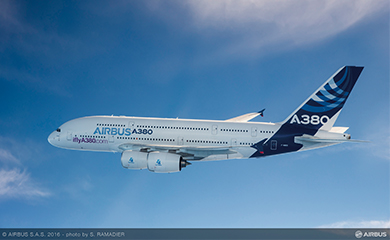
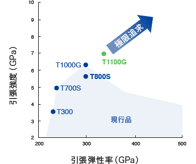
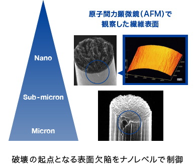

複合材料研究所
複合材料研究所は繊維研究所愛媛研究室と高分子研究所複合材料研究室が統合されて、1990年（平成2年）に発足しました。当研究所は炭素繊維 トレカ®やマトリックス樹脂などの複合材料素材、織物やプリプレグなどの成形用中間基材、複合材料部材の成形加工法および複合材料設計・解析の研究を行っています。
複合材料研究所では、複合材料事業の拡大により地球温暖化問題に貢献するべく、炭素繊維トレカ®、マトリックス樹脂、コンポジット材料に至るまでの一貫した研究を行っています。
炭素繊維研究
繊維中の炭素結晶構造制御やナノレベルの繊維表面改質などの技術を確立することにより、高強度中弾性率炭素繊維T800Sを研究・開発し、ボーイング777・787型機、エアバスA380型機など、近年開発された主要な航空機に採用されています。また、さらなる構造制御技術の深化により引張強度・弾性率を同時に10％高めたT1100Gを上市するなど、炭素繊維の高性能化を追求し続けています。

当社炭素繊維トレカ®が適用されているエアバス社A380
ボーイング社が開発を進めている次世代大型旅客機777Ｘ（トレカ®プリプレグを供給予定） ©Boeing
マトリックス樹脂研究
プリプレグの層間を熱可塑性粒子で強化することにより、コンポジットの耐衝撃特性を向上させた高靭性炭素繊維強化複合材料「T800H/3900-2」は、1990年に炭素繊維強化複合材料としては初めてボーイング777型機の一次構造材に認定されました。2005年にはボーイング787型機向けに、2015年にはボーイング777X向けに、適用を拡大する契約が締結されました。さらに分子構造設計により、架橋構造の自由体積を制御して緻密化したマトリックス樹脂3940シリーズや、強度と耐衝撃性を高いレベルで両立した東レ独自のナノアロイ®技術など、高性能化を追求しています。
トレカ®T1100G -強度と弾性率を高いレベルで両立-


コンポジット材料研究
自動車用途での本格適用を見据え、2003年より継続して国家プロジェクトに参画し、車体プラットフォームを数分で成形するRTM技術や、炭素繊維を均一分散させたスタンパブルシートで高強度部材を1分以内で成形する技術など、ニーズを先取りした革新的技術の創出活動を推進しています。また、プリプレグに特定パターンの切込を入れることで、力学特性を確保しつつ、従来プリプレグの成形における形状自由度を抜本的に改善するトレカ®プリプレグET40、炭素繊維からなる3Dネットワーク構造の形成により超軽量・高剛性を実現するCFRFを開発しました。
力学特性と成形性・生産性を両立するコンポジット材料
※ET40は2015年度日本複合材料学会技術賞受賞
フィラメントタイプからなる炭素繊維強化複合材料は軽量・高剛性のノートパソコン筐体に使用されています
※ 2008年度 全国発明表彰内閣総理大臣発明賞受賞
写真提供：レノボ・ジャパン株式会社
研究・開発の歩み（抜粋）
| 1971 | 炭素繊維トレカ®の生産開始 |
|---|---|
| 1977 | 繊維研究所愛媛研究室設立 |
| 1987 | 高分子研究所複合材料研究室発足 |
| 1990 | 複合材料研究所設立 |
| 1992 | 航空機一次構造材用プリプレグ T800H/3900-2の生産開始 |
| 1996 | 電磁波シールド性に優れる炭素繊維強化樹脂 ノートパソコン筐体の生産開始 |
| 2003 | 超軽量・高剛性ノートパソコン筐体の開発 |
| 2008 | 自動車用ハイサイクル成形部材を開発 |
| 2011 | 当社CFRPが採用されたボーイング787就航 |
| 2014 | 高強度・高弾性率炭素繊維トレカ®T1100Gの生産開始 |
| 2017 | 次世代航空宇宙用プリプレグT1100G/3940の開発 |